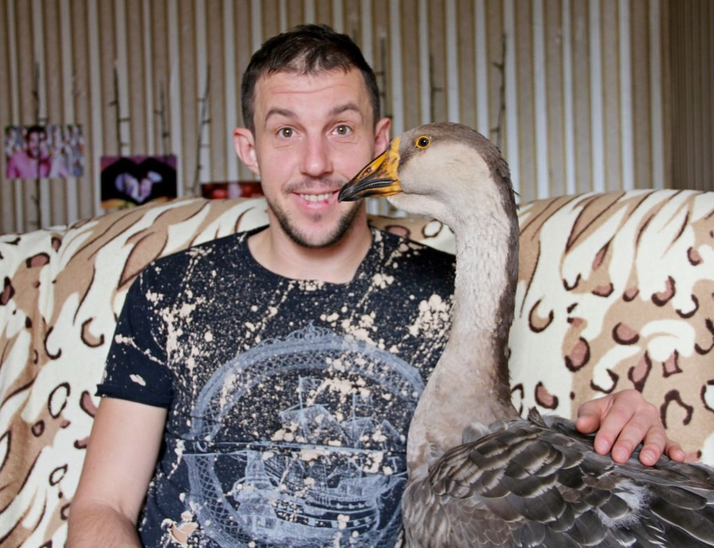
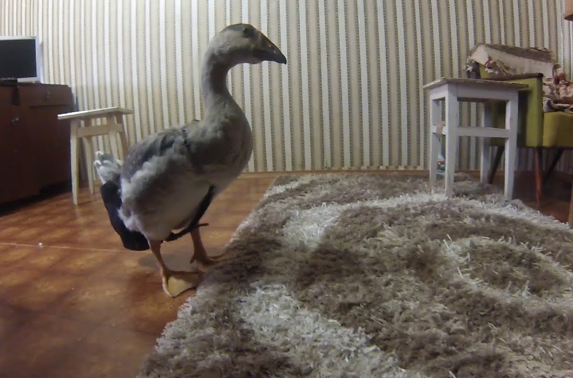
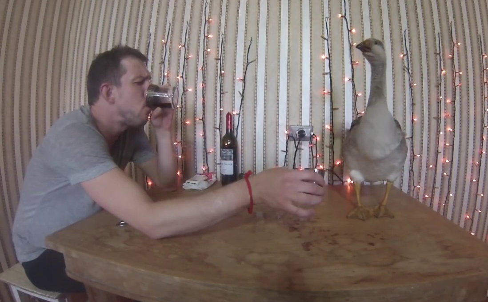
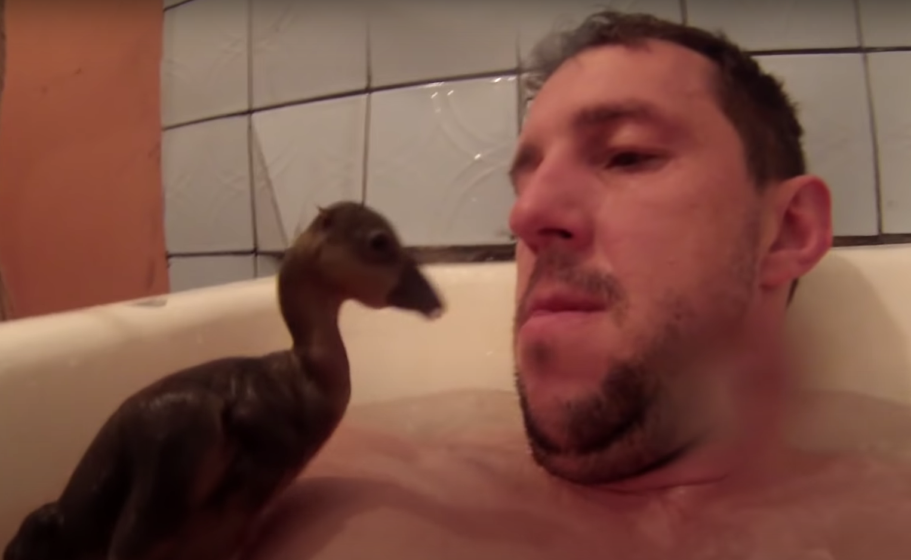
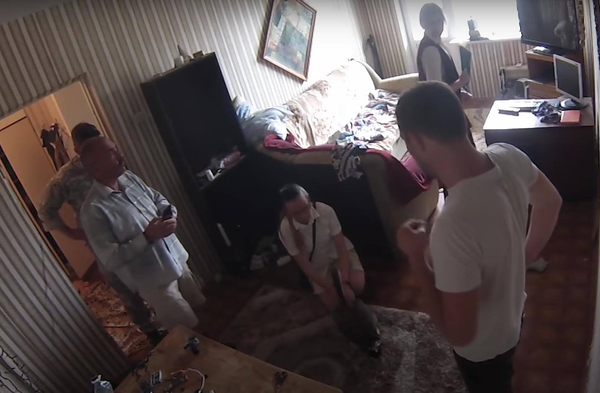

.png "Главная")
Гусь дома
Присутствие в квартире экзотических или просто странных животных, которые никогда не считались подходящими для содержания в комнатных условиях, остается популярным. Люди заводят диких зверей и рептилий, декоративных свиней и сельскохозяйственных птиц. Наличие гусей в квартире имеет свои сложности, с которыми следует познакомиться, прежде чем заводить птиц в условиях мегаполиса.
Особенности содержания гусей в домашних условиях

Гусь – крупная птица. Для нормального развития ей необходимо не менее 2 квадратных метров пространства. Ведь ежедневно выпускать гуся гулять по квартире позволит себе не каждый владелец. Основные недостатки крупной птицы, которые следует учитывать:
- это не кошки, их практически невозможно приучить ходить в лоток, гуси много едят и гадят практически везде, если находятся вне клетки;
- летом гуси в течение дня находятся на выгуле, обеспечить такие условия в городе невозможно, никто не позволит птицам объедать газоны, да и пасти их в течение нескольких часов ежедневно – невыполнимая задача;
- они съедают до 2 килограмм зеленой массы или сена в день, следует продумать, где будет храниться запас корма, особенно зимой;
- гуси – громкие птицы, обладающие зычным голосом, люди, проживающие за стеной, не будут в восторге от такого соседства;
- их обязательно систематически выгуливать и предоставлять водоем или возможность поплавать в ванне.
Птицы нуждаются в ветеринарных осмотрах и вакцинации. Дважды в год они линяют, поэтому в квартире будет много пуха и перьев. Следует учитывать характер птиц – гуси ревнивы и долго помнят обиду.
Подходящие породы
Это зависит от предпочтений хозяина. Все породы гусей делятся на 3 типа: тяжелые — когда гусь весит 7-9 килограмм, гусыня — до 8 килограмм, средние, к которым относится большинство декоративных пород, легкие породы, если взрослые гуси достигают 4-6 килограмм. Дома заводят либо крупных птиц 9-12 килограмм, которые поразят размерами соседей и друзей, либо представителей декоративных пород. Например, птицы курчавой породы имеют белоснежный окрас и очень красивое оперение.
Подготовка помещения

Гуся можно расположить в клетке на застекленном балконе или лоджии. Следует учитывать, что клекотом он способен будить соседей. Иногда сооружают в одной из комнат или в кладовой небольшой вольер или ставят подходящую клетку. Если для жилья питомца определяют кладовую, в ней необходимо освещение (не менее 14 часов в сутки).
В клетке размещают подстилку, поилку и кормушку. Их ежедневно моют. Кроме кормушки, обязательна емкость с мелкими камушками, они необходимы для нормального пищеварения. Вода должна быть в поилке постоянно. Для подстилки используют солому или стружку. Чтобы не было запаха, подстилку меняют ежедневно. Птицу следует каждый день выпускать из клетки, чтобы размяться. Раз в 2-3 дня гусю необходимо поплавать, чтобы сохранить чистоту перьев, избавиться от лишнего пуха.
Правила кормления

Кормят питомца 3 раза в день. Летом в рационе обязательна свежая трава, зимой – сено, не менее 2 килограмм на особь в день. Утром и вечером дают дробленое зерно (смесь кукурузы, овса, пшеницы). Взрослые птицы потребляют 300 грамм зерновой смеси в день, разделенной на 3 приема.
Зерно предварительно дробят, заливают кипятком и дают постоять 3-4 часа. Цельное зерно плохо переваривается пернатыми.
Днем, кроме травы, необходимы мешанки из мелко нарезанных овощей (моркови, свеклы, тыквы, картофеля). Особям, живущим в квартире, 2-3 раза в неделю дают мясной фарш. Это источник белка. В рационе должны быть кормовые дрожжи, соль, рыбий жир или рыбная мука. Для обогащения питания кальцием к овощным мешанкам добавляют творог, дают питомцу молочную сыворотку. Корм должен быть качественным, овощи чистые, без признаков плесени и гнили.
Если на воспитание попадает маленький гусенок (суточный, или хозяин решил приобрести оплодотворенное яйцо и наблюдал процесс появления), ему дают сваренные вкрутую, мелко нашинкованные яйца. С 5 дня к яйцам подмешивают творог, через неделю вводят в рацион мелко нарезанную свежую крапиву.
Через 2-3 недели малыша постепенно переводят на взрослый рацион. Ему также необходим постоянный доступ к свежей воде. Гуси предпочитают кормиться вечером и ночью, необходимо следить, чтобы вечером в кормушке был корм.
Гигиена

Гусей обязательно глистогонят 2 раза в год. Препараты приобретают в ветеринарной аптеке и используют по инструкции производителя. Консультацию о необходимых прививках можно получить в ближайшей ветеринарной клинике. Лучше найти лечебницу, специализирующуюся на пернатых питомцах. Гусят после 3 недель от роду и взрослых птиц следует купать 2-3 раза в неделю без применения моющих средств. Лучше набирать питомцу чуть теплую воду.
Гусенка после водных процедур следует поместить под лампу для просушки, зимой просто размещают коробку с малышом поближе к батарее отопления. Лапы моют после каждой прогулки и по мере загрязнения.
Возможные затруднения

Основные трудности возникают с туалетом. Питомец не способен приучиться ходить в лоток, поэтому, уходя из дома, его следует помещать в загон или клетку. Лучше подрезать ему крылья, сильная и крупная птица, взлетев, может устроить погром в квартире. Гуси своенравны и ревнивы, они быстро привыкают к хозяину, но посторонних могут щипать и пытаться выгнать с территории, которую животное считает своей.
Необходимо отвести в квартире место для хранения кормов и материала для подстилки, зерносмесь можно приготовить самостоятельно из продуктов, купленных в магазине, но с сеном зимой могут возникнуть проблемы.
В неволе, при хорошем уходе, гусь может прожить до 30 лет. Планируя завести пернатого питомца в городской квартире, необходимо объективно оценивать свои возможности, поскольку птица не слишком подходит для комнатного содержания. Конечно, всегда остается вариант приготовить его с яблоками к праздничному столу, но это не лучшее решение.